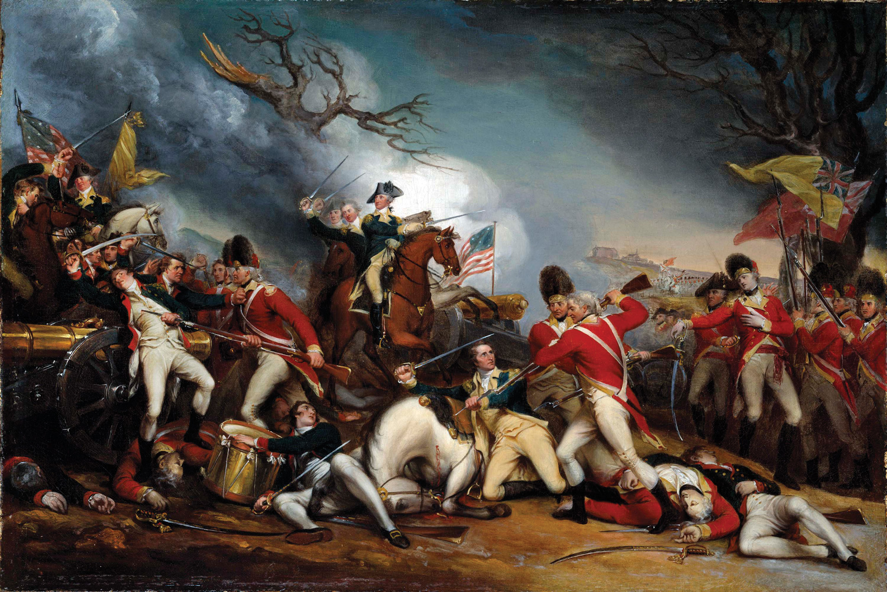
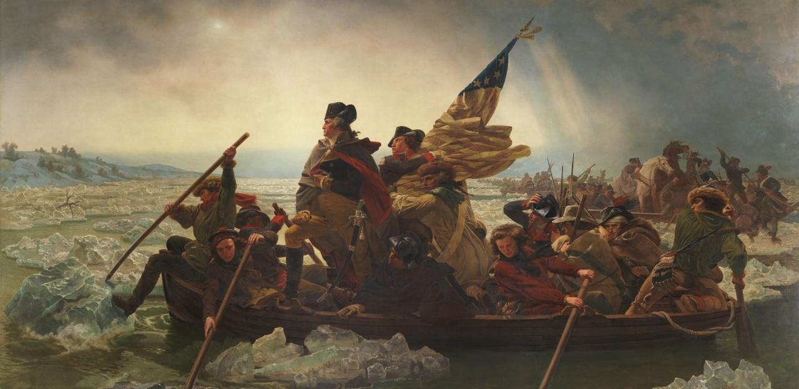
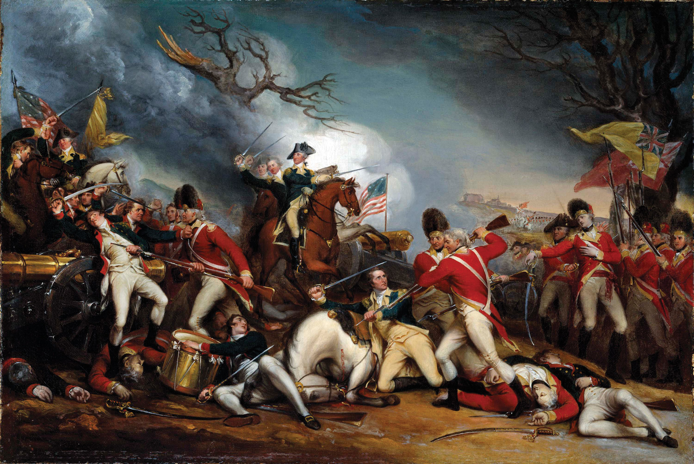
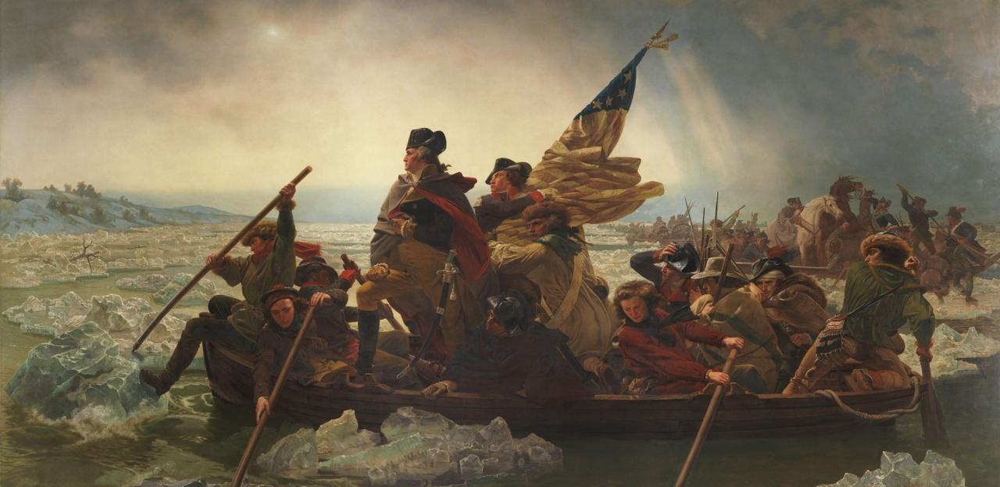

George Washington

During George Washington's time as General, he actually lost more battles than he won. Despite that he still became was an American Founding Father, politician, a gerneral, the 1st president of the United States of America.
 


